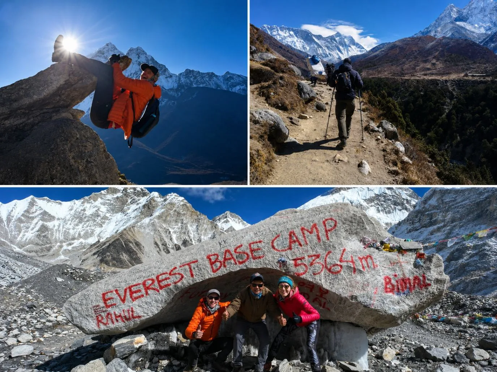
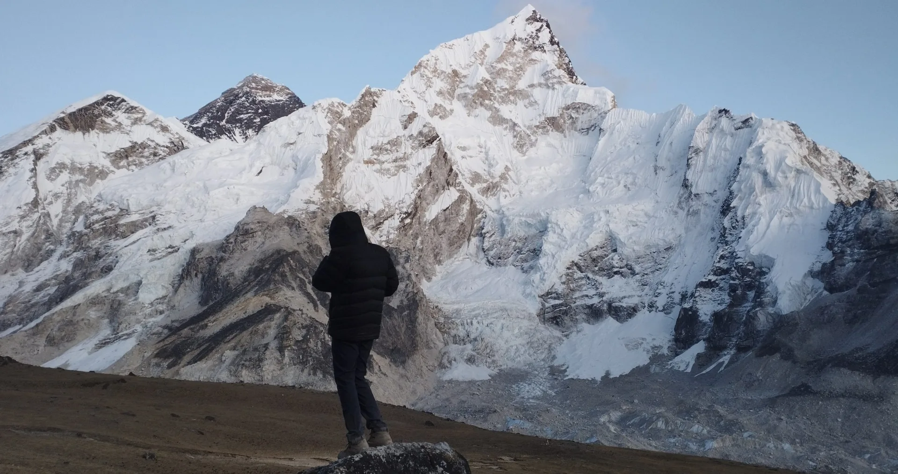
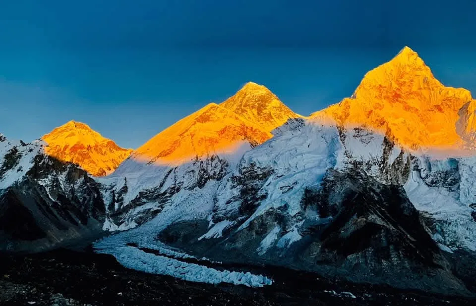
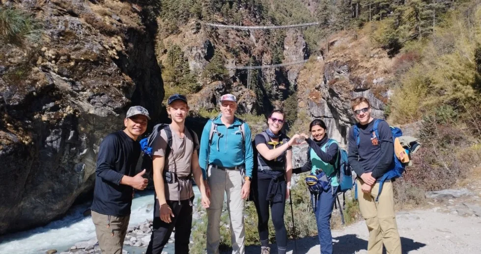
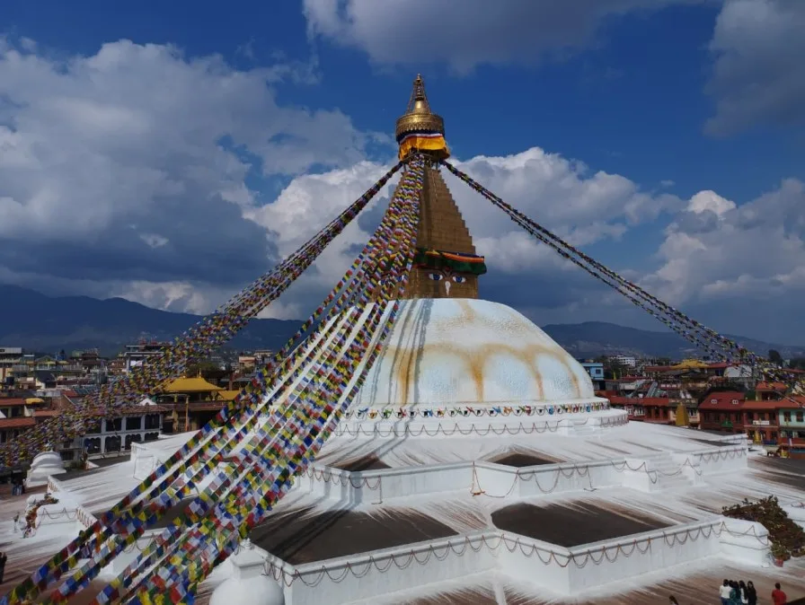
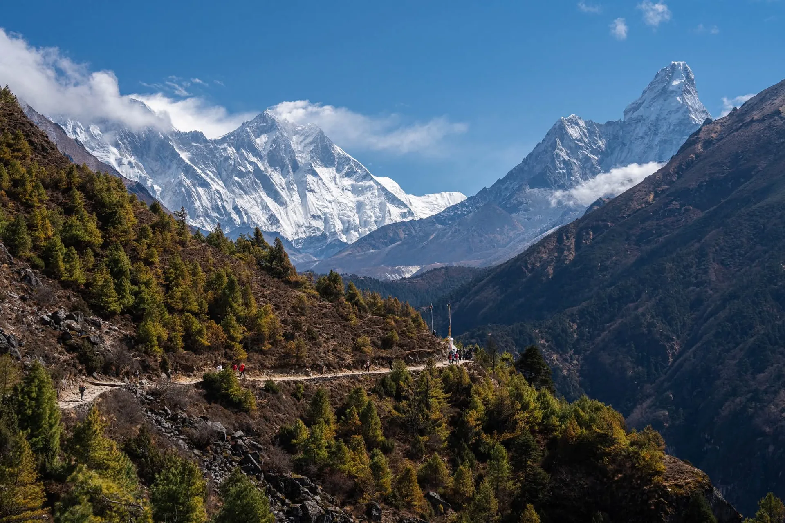

1. The Khumbu Trail Architecture: Route Overview, Distances & Topography
The classic trek to Everest Base Camp (EBC) covers approximately 130 kilometers (81 miles) roundtrip through the UNESCO World Heritage-listed Sagarmatha National Park in northeastern Nepal.
Starting at Tenzing-Hillary Airport in Lukla (2,846 m / 9,337 ft), the trail follows the roaring Dudh Koshi River northward, ascending through lush alpine pine and rhododendron forests before climbing steeply into the high-altitude Sherpa trading capital of Namche Bazaar (3,440 m). Beyond Namche, the landscape transitions into subalpine scrub, rugged moraines, and the active frozen expanse of the Khumbu Glacier, culminating at Everest Base Camp (5,364 m / 17,598 ft) and the panoramic summit of Kala Patthar (5,545 m / 18,192 ft).

| Trail Segment | Distance | Starting Elev. | Ending Elev. | Trek Duration | Terrain Difficulty |
|---|---|---|---|---|---|
| Lukla → Phakding | 8.5 km | 2,846 m | 2,610 m | 3 – 4 Hours | Gentle descent, stone steps, pine forests |
| Phakding → Namche Bazaar | 10.5 km | 2,610 m | 3,440 m | 5 – 6 Hours | Suspension bridges, steep uphill Namche Hill climb |
| Namche → Tengboche | 9.5 km | 3,440 m | 3,867 m | 5 – 6 Hours | Valley descent to Phunki Thenga, steady monastery climb |
| Tengboche → Dingboche | 11.0 km | 3,867 m | 4,410 m | 5 – 6 Hours | Alpine meadows, crossing tree line, wide Imja Valley |
| Dingboche → Lobuche | 8.5 km | 4,410 m | 4,940 m | 4 – 5 Hours | Gradual riverbed climb, steep Thukla Memorial Pass |
| Lobuche → Gorak Shep → EBC | 12.0 km | 4,940 m | 5,364 m | 7 – 8 Hours | Rocky moraine, active glacier footing, thin air |
| Gorak Shep → Kala Patthar → Pheriche | 14.0 km | 5,164 m | 5,545 m → 4,240 m | 7 – 8 Hours | Pre-dawn steep rocky climb, long rapid descent |
2. Master 14-Day Itinerary: The Non-Negotiable Two-Stop Acclimatization Strategy
The number one mistake made by budget travelers or inexperienced hikers is rushing the ascent to save time or money. At 5,000 meters, each breath delivers roughly half the oxygen molecules available at sea level. Your body requires physiological time to synthesize additional red blood cells and increase resting ventilation.

The Golden Acclimatization Rule: Climb High, Sleep Low
A medically safe Everest Base Camp itinerary mandates two separate two-night rest stops:
- Rest Stop 1 — Namche Bazaar (3,440 m, Days 3 & 4): On Day 4, embark on an active acclimatization hike to the Everest View Hotel (3,880 m) or Khumjung village (3,790 m), gaining 400+ meters before returning to Namche to sleep.
- Rest Stop 2 — Dingboche (4,410 m, Days 6 & 7): On Day 7, hike up the steep ridge of Nangkartshang Peak (5,083 m) for breathtaking vistas of Ama Dablam, Makalu, and Island Peak before descending back to Dingboche.
| Day | Route Segment | Elevation Gain / Loss | Night Sleeping Elev. | Key Focus |
|---|---|---|---|---|
| Day 1 | Kathmandu / Ramechhap → Lukla → Phakding | +2,846 m (flight) / -236 m (hike) | 2,610 m | Flight arrival, gentle downhill warm-up |
| Day 2 | Phakding → Monjo → Namche Bazaar | +830 m | 3,440 m | Hillary Bridge crossing, steep Namche Hill |
| Day 3 | Acclimatization Day in Namche Bazaar | +440 m hike / -440 m | 3,440 m | Hike to Everest View Hotel & Khumjung |
| Day 4 | Namche Bazaar → Tengboche | +427 m (net) | 3,867 m | Tengboche Monastery puja & Ama Dablam views |
| Day 5 | Tengboche → Pangboche → Dingboche | +543 m | 4,410 m | Crossing the alpine tree line into Imja Valley |
| Day 6 | Acclimatization Day in Dingboche | +673 m hike / -673 m | 4,410 m | Nangkartshang Peak hike (5,083 m) |
| Day 7 | Dingboche → Thukla → Lobuche | +530 m | 4,940 m | Thukla Pass climber memorials & moraine trail |
| Day 8 | Lobuche → Gorak Shep → Everest Base Camp → Gorak Shep | +424 m | 5,164 m | Reach Everest Base Camp (5,364 m)! |
| Day 9 | Gorak Shep → Kala Patthar → Pheriche | +381 m summit / -1,305 m | 4,240 m | Kala Patthar Sunrise (5,545 m), rapid descent |
| Day 10 | Pheriche → Tengboche → Namche Bazaar | -800 m | 3,440 m | Rich oxygen return, warm bakeries in Namche |
| Day 11 | Namche Bazaar → Phakding → Lukla | -594 m | 2,846 m | Final trail celebration dinner with guide & porters |
| Day 12 | Lukla → Kathmandu / Ramechhap | Flight transfer | 1,400 m | Return to hotel shower and massage in Thamel |
| Day 13 | Contingency Buffer Day in Kathmandu | Rest day | 1,400 m | Essential buffer for Lukla weather delays |
| Day 14 | International Departure Flight | Departure | Home | Safe flight home with lifelong memories |
3. Altitude Sickness Prevention: Diamox, Pulse Oximeters & The 500-Meter Sleeping Rule
Acute Mountain Sickness (AMS) is the single greatest hazard on the Everest Base Camp trek. It affects anyone regardless of age, gym fitness, or athletic prowess. Understanding the medical realities of high altitude is essential for survival.

The Golden 500-Meter Sleeping Rule
Above 3,000 meters, your net sleeping altitude should never increase by more than 300 to 500 meters per 24 hours. While you can hike higher during the daytime (such as summiting Kala Patthar or climbing Nangkartshang Peak), where you sleep at night dictates how your body acclimatizes.
Diamox (Acetazolamide): How and When to Use It
- How it works: Diamox is a carbonic anhydrase inhibitor that acidifies the blood, stimulating your brain to breathe faster and deeper (especially while sleeping), thereby taking in more oxygen.
- Preventative Dosage: 125 mg to 250 mg taken twice daily, beginning 24 hours before ascending above Namche Bazaar (3,440 m) or at Lukla.
- Common Harmless Side Effects: Tingling sensation in fingers, toes, and lips (paresthesia), and increased urination (it is a mild diuretic). Carbonated drinks may taste flat.
- Contraindication: Do not take Diamox if you have a known allergy to sulfa-based medications.
Daily Pulse Oximeter Monitoring
Every certified guide at Igloo Himalaya Treks carries a medical-grade fingertip pulse oximeter. We record your resting heart rate and blood oxygen saturation (SpO2) every morning and evening.
- Sea Level Normal: 95% – 99% SpO2
- Namche Bazaar (3,440 m): 85% – 92% SpO2
- Dingboche / Lobuche (4,400 m – 4,900 m): 78% – 85% SpO2
- Gorak Shep (5,164 m): 70% – 80% SpO2
4. Pre-Trek Conditioning: Stairmaster, Rucking & 12-Week Endurance Protocol
While the Everest Base Camp trek does not involve technical rock climbing or ropes, it entails walking 5 to 8 hours daily for nearly two consecutive weeks on rocky, uneven trails while carrying a daypack in cold, oxygen-thin air.

The #1 Training Exercise: The Gym Stairmaster
Flat-ground treadmill running does not adequately prepare your leg muscles for the Khumbu's relentless stone staircases (such as the 600-meter vertical grunt up Namche Hill). The single most effective gym machine is the revolving step Stairmaster:
- Train 3 to 4 times per week for 45 to 60 minutes.
- Do not lean on the handrails; maintain an upright core.
- Wear your actual trekking boots and carry a weighted backpack (6–10 kg) during the final 6 weeks.
Outdoor Rucking & Eccentric Quad Conditioning
On weekends, practice rucking (hiking uphill and downhill on local outdoor trails with a 10 kg backpack for 4 to 6 hours). Downhill hiking is what causes extreme knee fatigue and DOMS (delayed onset muscle soreness). Train your eccentric quadriceps with step-downs, Bulgarian split squats, lunges, and calf raises.
| Training Phase | Weekly Focus | Cardio Sessions | Strength & Core | Weekend Hike |
|---|---|---|---|---|
| Weeks 1 – 4 (Base) | Aerobic engine building & posture | 3x 40 min Zone 2 cardio (jog/bike) | 2x Squats, lunges, planks | 2 – 3 hour walk without pack |
| Weeks 5 – 8 (Build) | Incline stamina & Stairmaster | 3x 50 min Stairmaster / hill incline | 2x Weighted lunges, step-ups | 4 hour hike with 5 kg pack |
| Weeks 9 – 11 (Peak) | Simulated multi-day fatigue | 4x 60 min Stairmaster with 8 kg pack | 2x Eccentric quad & core work | 5 – 6 hour rugged hike with 10 kg pack |
| Week 12 (Taper) | Active recovery & stretching | 2x 30 min light cardio | Light stretching & foam rolling | Rest & pack your expedition bags! |
5. Mastering Lukla Flights & Ramechhap Logistics: Weather Delays & Buffer Days
Flying into Tenzing-Hillary Airport in Lukla is an unforgettable bucket-list experience, but it is also the most flight-delayed mountain airstrip in the world. Situated at 2,846 meters surrounded by sheer cliffs, planes operate strictly under Visual Flight Rules (VFR). If fog, afternoon winds, or cloud cover descend, all flights immediately halt.

Kathmandu vs. Ramechhap (Manthali Airport) Operations
To ease severe air traffic congestion at Tribhuvan International Airport (KTM) during peak trekking months (October, November, April, May), the Civil Aviation Authority of Nepal (CAAN) routes almost all Lukla passenger flights through Manthali Airport in Ramechhap.
- The Overland Transfer: Reaching Ramechhap requires a 4-to-5-hour road journey from Kathmandu, departing your hotel around 1:30 AM to catch early-morning 6:00 AM flights.
- The Flight Advantage: The flight from Ramechhap to Lukla takes just 15 to 18 minutes, allowing airlines to operate rapid back-to-back rotations before midday cloud cover closes Lukla.
Strict 15 kg Weight Limit
STOL Twin Otter and Dornier aircraft enforce a strict combined baggage limit of 15 kilograms (33 lbs) per passenger (typically 10 kg in your main duffel bag and 5 kg in your daypack). Excess luggage incurs fees of approximately NPR 150–250 per kg, but planes may refuse excess weight if flights are at full capacity. Leave your city clothes and hard-shell suitcases safely in secure luggage storage at your Kathmandu hotel.
6. The High-Altitude Layering System: Baffled Down, Merino Wool & Shells
On the trail to Everest Base Camp, you will experience blazing hot sunshine at midday (where you hike in a t-shirt at 20°C) and bone-chilling sub-zero freezes at night (-15°C to -20°C in your lodge bedroom). Mastering the 4-layer clothing system keeps you dry, thermoregulated, and safe.

The 4-Layer System
- Base Layer (Next-to-Skin): 100% Merino wool or high-end synthetic thermal top and bottoms (200–260 gsm). Never wear cotton; cotton absorbs sweat, remains damp, and induces rapid hypothermia when you stop moving.
- Mid-Layer (Active Insulation): Breathable grid fleece jacket or lightweight synthetic active insulator (such as PrimaLoft or Polartec Alpha) for hiking during cool mornings.
- Heavy Insulating Layer: A heavyweight, box-wall baffled down jacket with at least 800+ fill power and a storm hood. You will live in this jacket during evenings at teahouses and during the freezing morning push up Kala Patthar.
- Outer Shell Layer: Waterproof, windproof Gore-Tex (or equivalent 3-layer breathable membrane) jacket and trousers to block brutal Himalayan gusts and unexpected snow flurries.
The -20°C Sleeping Bag Requirement
Teahouse bedrooms in Lobuche and Gorak Shep are unheated, thin plywood rooms. While lodges provide thick duvets, they are often dusty and insufficient during cold nights. You must bring a 4-season down sleeping bag with a comfort rating of -15°C to -20°C (0°F to -4°F). If you do not own one, top-grade expedition sleeping bags can be rented affordably in Thamel (Kathmandu) for $1.50 to $2.50 USD per day.
7. Footwear Strategy: Breaking In Boots, Merino Socks & Zero-Blister Protocol
Your feet are your vehicle for 130 kilometers. A single infected blister or black toenail can turn a dream Himalayan expedition into an agonizing ordeal.

Choosing & Breaking In Your Boots
- Boot Type: Medium to heavy-duty hiking boots with solid ankle support, a waterproof Gore-Tex membrane, and a stiff, lugged Vibram sole for gripping rocky glacial moraine. Trail runners are acceptable only for experienced ultralight hikers below 4,000 meters, but boots are far safer for loose moraine and snow above Dingboche.
- Sizing: Buy boots a half size to full size larger than your casual shoe size. Feet swell naturally at high altitude, and extra room in the toe box prevents your toes from bruising against the front during long descents.
- The Break-In Mandate: Never arrive in Nepal with brand-new boots straight out of the box. Walk at least 50 to 80 kilometers in them at home before departure.
The Zero-Blister Protocol
Blisters are caused by friction and moisture. Adopt the professional two-sock system:
- Wear an ultra-thin synthetic or merino liner sock directly against your skin.
- Wear a thick, cushioned merino wool trekking sock over the liner. The two socks rub against each other rather than rubbing against your skin.
- Treat Hot Spots Immediately: Never wait until a blister forms. At the first sensation of heat or friction, stop on the trail, remove your boot, and apply medical Leukotape, kinesiology tape, or Compeed blister hydrocolloid patches.
8. Mountain Nutrition & Hydration: The Vegetarian Rule & 4 Liters Daily Fluid
Trekking 6 to 8 hours daily at high altitude consumes between 4,000 and 5,500 calories per day. However, altitude often suppresses appetite. Eating enough calories and staying hyper-hydrated is essential for muscle recovery and keeping your blood thin enough to deliver oxygen.

The Golden Rule: Go Strictly Vegetarian Above Namche
In the Sherpa Buddhist homeland of the Khumbu, religious tenets prohibit the slaughter of animals. Consequently, all meat (chicken, pork, yak, water buffalo) is slaughtered at lower elevations and carried up from Lukla on porters' backs in unrefrigerated wicker baskets over 3 to 5 days in fluctuating temperatures.
Consuming meat above Namche Bazaar is the leading cause of the dreaded "Khumbu Belly" (acute bacterial gastroenteritis). Stick strictly to vegetarian meals above Namche: vegetable fried rice, Sherpa potato stew (Shakpa), momos, oatmeal, eggs, and Dal Bhat.
The Power of Dal Bhat (Unlimited Refills)
Traditional Nepalese Dal Bhat—steamed rice, savory lentil soup, vegetable curry, and pickled greens—is the premier high-altitude fuel. It is cooked fresh daily in every lodge, contains clean complex carbohydrates and plant protein, and comes with free unlimited refills. When your body is ravenous after a 7-hour hike, Dal Bhat guarantees you go to bed full.
Hydration Strategy: 4 Liters Every Day
Dry, cold mountain air rapidly dehydrates your respiratory tract, while hyperventilation expels enormous moisture with every breath. Drink at least 3.5 to 4 liters of fluid daily:
- Drink 1 liter of hot lemon ginger honey tea with breakfast.
- Carry two 1-liter wide-mouth Nalgene bottles with electrolyte powders on the trail.
- Drink a bowl of hot garlic soup every evening—a traditional Sherpa remedy that promotes arterial blood dilation and aids acclimatization.
- Water Purification: Never buy single-use plastic bottled water (which pollutes the national park and costs $3–$4 USD at high lodges). Use Aquatabs chlorine dioxide tablets, a SteriPEN UV purifier, or order boiled lodge water.
9. Battery Survival in Sub-Zero Cold: Keeping Phones & Cameras Alive at -15°C
Lithium-ion batteries rely on liquid chemical electrolytes. When temperatures drop below freezing, internal chemical resistance spikes, causing battery voltage to crash instantaneously. An iPhone showing 85% battery at 8:00 PM can drop to 0% and shut down by 6:00 AM if left on a cold bedside table.

The Sleeping Bag Battery Trick
Every evening before going to sleep, pack all your electronics into an insulated dry bag or wool beanie and place them inside the foot box of your sleeping bag. Your body heat will keep the batteries warm throughout the freezing night, preserving their full charge for the morning. During the day, carry your phone and camera in an internal jacket pocket close to your chest.
Power Banks & Charging Costs
- Bring a 20,000mAh Power Bank: Teahouse rooms do not have wall outlets. Charging devices in the communal dining hall costs between NPR 300 ($2.50) in Namche to NPR 800 ($6.50) in Gorak Shep per device. A robust power bank lets you recharge your phone and headlamp 4 to 5 times for free.
- Cold Airplane Mode: Keep your phone in Airplane Mode permanently on the trail. Searching for weak cellular signals rapidly drains battery power.
- Headlamp Batteries: Carry a spare set of AAA lithium batteries (or a fully charged spare battery pack) for your headlamp. You will need reliable light for the 4:30 AM pre-dawn ascent of Kala Patthar.
10. Trail Hygiene & Sanitation: The 'Wet Wipe Bath' & Preventing Khumbu Cough
Maintaining hygiene at high altitude requires adapting to the harsh mountain environment. High-altitude teahouses rely on solar or gas-heated water, but above 4,000 meters, taking a shower poses severe health risks.

Why You Should Stop Showering Above Namche
Taking a shower in unheated, drafty bathrooms in Dingboche or Lobuche exposes you to severe cold shock. Walking back to your sub-zero room with damp hair can trigger chills, hypothermia, and severe respiratory infections.
Instead, adopt the veteran mountaineer's "Wet Wipe Bath":
- Carry two large packs of biodegradable wet wipes.
- Warming trick: Put a few wipes in your inner jacket pocket 10 minutes before using them so they aren't freezing cold against your skin.
- Clean yourself quickly in your private room before slipping into dry evening base layers.
Preventing the Infamous "Khumbu Cough"
The "Khumbu Cough" is an irritating high-altitude bronchitis caused by breathing extremely dry, sub-zero mountain air combined with airborne dust kicked up by yak caravans. If left untreated, severe coughing fits can strain or crack intercostal ribs.
- Wear a Buff 24/7: Wear a merino wool or microfiber neck buff over your mouth and nose from the moment you leave Namche. The buff traps exhaled moisture, humidifying each breath before it reaches your lungs.
- Suck on Throat Lozenges: Keep honey, eucalyptus, or menthol throat lozenges in your pocket to keep your pharynx lubricated.
11. Cash Strategy & Money Management: ATMs, Daily Expenses & Tipping Etiquette
Managing money along the Everest Base Camp trail requires careful planning. While credit card machines exist in select luxury lodges in Namche Bazaar, credit cards are useless above Namche. Cash is king.

The ATM Trap in Namche Bazaar
Namche Bazaar has a handful of bank ATMs, but you should never rely on them as your primary cash source. ATMs in Namche frequently lose satellite connectivity, experience power outages, or run completely out of cash banknotes during peak trekking season.
Withdraw all your anticipated cash in Nepalese Rupees (NPR) in Kathmandu before boarding your Lukla flight.
Daily Trail Incidental Budget
Even if you book an all-inclusive trekking package, you must budget cash for personal daily incidentals:
- Hot Showers: NPR 500 – 800 ($4–$6)
- Device Charging: NPR 300 – 700 ($2.50–$5.50)
- Wi-Fi Cards (Everest Link / Starlink vouchers): NPR 700 – 1,000 ($5.50–$8)
- Boiled Drinking Water: NPR 300 – 600 ($2.50–$5) per liter
- Hot Bakery Treats & Coffee in Namche: NPR 500 – 1,000 ($4–$8)
- Recommended Cash Cushion: Carry approximately NPR 3,500 to 5,000 ($28–$40 USD) per person, per day.
Tipping Standards for Guides and Porters
Tipping is an established cultural norm in the Himalayas that directly supports the families of local staff who carry your gear and ensure your safety. On the final evening in Lukla, it is customary to present tips in Nepalese Rupees:
- Certified Trekking Guide: $15 – $25 USD per day from the group.
- Porter: $10 – $15 USD per day from the group.
- As a general benchmark, plan on tipping roughly 10% to 15% of your total trekking tour cost.
12. Trail Etiquette & Safety: Suspension Bridges, Yak Caravans & Mountain Right-of-Way
The Everest Base Camp trail is not a remote wilderness trail; it is an ancient Sherpa trade artery connecting ancient villages, monasteries, and mountain families. Observing proper trail safety and cultural etiquette guarantees a harmonious journey.

The Golden Yak Rule: Always Hug the Mountain Wall
Throughout the Khumbu, heavy yak (and crossbred dzo) caravans transport food, propane tanks, and trekking duffels up the mountains. Yaks have massive horns and carry wide cargo panniers.
Whenever you hear approaching bells or see a yak team:
- Step to the Mountain/Cliff-Side of the Trail: Never, under any circumstances, stand on the valley/drop-off side. If a yak stumbles or swings its load, it can inadvertently bump you off the trail edge into the gorge.
- Wait patiently until the entire caravan has passed before resuming your hike.
Suspension Bridge Protocol
The trail crosses several vertigo-inducing steel suspension bridges, including the famous double-decker Hillary Suspension Bridge hanging 125 meters above the Dudh Koshi River:
- Never cross a suspension bridge while a yak or mule train is already on it. Yield and wait until the bridge is clear.
- Walk steadily in the center of the walkway. Do not stop in the middle for extended selfies if a queue of hikers or porters is waiting behind you.
- Hold onto your trekking poles securely; strong cross-canyon gusts can easily snatch loose hats, gloves, or phones.
Cultural Etiquette in Sherpa Country
- Walk Clockwise: Always pass Buddhist chortens, stupas, mani stone walls, and prayer wheels on your right side (walking clockwise).
- Do Not Step on Mani Stones: The sacred Tibetan mantras (Om Mani Padme Hum) carved into stone walls are holy artifacts; never sit, stand, or lean walking poles on them.
- Photography: Always ask permission before photographing local Sherpa elders or monks inside monastery prayer halls.
13. Seasonal Timing: Comparing Spring, Autumn & Winter Weather Windows
Choosing the right seasonal window can mean the difference between crystal-clear views of Everest against deep blue skies and struggling through torrential rain, fog, or impassable snowdrifts.

| Season | Months | Day Temp (Namche) | Night Temp (Gorak Shep) | Key Advantages & Trade-offs |
|---|---|---|---|---|
| Autumn (Peak) | Late Sep – Nov | 12°C to 16°C | -5°C to -12°C | Gold Standard: Crystal-clear skies, dry trails, lowest rain probability. Teahouses and flights are busy. |
| Spring (Bloom) | Mar – May | 14°C to 18°C | -2°C to -8°C | Expedition Season: Blooming rhododendron forests, Everest climbing teams active at Base Camp, warmer days. Afternoon haze possible. |
| Winter (Cold & Solitude) | Dec – Feb | 6°C to 10°C | -18°C to -25°C | Pure Solitude: Crisp blue skies, empty trails, zero flight queues. Extreme sub-zero cold requires expedition down gear. |
| Monsoon (Rain) | Jun – Aug | 16°C to 20°C | 2°C to 6°C | Not Recommended: Heavy rain, muddy trails, leeches at lower elevations, constant cloud cover obscuring peaks, frequent Lukla flight cancellations. |
14. Real Expedition Costs, Permits & Agency Package Value in 2026
Navigating official permits, domestic flights, and lodge bookings in 2026 requires understanding both regulatory requirements and realistic expenditure benchmarks.

Required Government Permits for EBC
Trekkers require two separate permits, which are verified at army and national park checkpoints in Monjo, Namche, and Dingboche:
- Khumbu Pasang Lhamu Rural Municipality Permit: NPR 3,000 (~$23 USD) per person, obtained at the checkpoint upon arrival in Lukla.
- Sagarmatha National Park Entry Permit: NPR 3,000 (~$23 USD) + 13% VAT (~$26 USD total), obtained at the Department of National Parks counter in Monjo or Kathmandu.
- Note: The TIMS (Trekkers' Information Management System) card is not required for the Everest region, as the local Khumbu government manages its own direct permit system.
Independent Budget vs. Guided Agency Packages
| Cost Component | Independent Trekker (Self-Arranged) | Full-Service Igloo Himalaya Treks Package |
|---|---|---|
| Lukla Flights (Roundtrip) | $380 – $420 USD | Included (Priority booking & transfer) |
| Permits (National Park + Local) | ~$50 USD | Included (Pre-arranged) |
| Certified Licensed Sherpa Guide | $30 – $38 USD / day (~$420 total) | Included (Senior wilderness first-aid certified) |
| Porter Support (1 Porter per 2 hikers) | $22 – $28 USD / day (~$320 total) | Included (Insured, well-equipped, fair-wage) |
| Lodge Accommodation (11–13 Nights) | $80 – $150 USD | Included (Pre-booked best available teahouses) |
| Full Meals (B, L, D + Teas) | $450 – $600 USD | Included (3 nutritious meals daily + hot drinks) |
| Total Realistic Cost | $1,380 – $1,640 USD | $1,350 – $1,750 USD (Total peace of mind) |
15. Travel Insurance & Emergency Helicopter Evacuation: 6,000m Coverage Essentials
There are no roads, ambulances, or wheeled transport anywhere in the Khumbu region above Lukla. If a trekker suffers severe Acute Mountain Sickness (HAPE/HACE), a broken limb, or life-threatening appendicitis, the only method of emergency evacuation is a high-altitude helicopter rescue.

The 6,000-Meter Altitude Rider Clause
Standard travel insurance policies (such as those bundled with credit cards or basic holiday policies) almost always contain fine-print exclusion clauses that cap coverage at 2,500 or 3,000 meters.
Because Everest Base Camp sits at 5,364 meters and Kala Patthar reaches 5,545 meters, you must purchase a policy that explicitly covers hiking up to 6,000 meters (20,000 ft) including emergency search-and-rescue helicopter evacuation. Reputable specialist insurers include:
- World Nomads: (Requires the 'Explorer' plan with high-altitude add-on).
- Global Rescue: (The gold standard for medical evacuation and mountain rescue).
- Ripcord Rescue Travel Insurance: Comprehensive high-altitude evacuation.
- Allianz / TuGo / BMC: (Check specific altitude rider clauses).
Helicopter Rescue Realities
A single private helicopter charter from Lobuche or Gorak Shep down to Kathmandu costs between $3,500 and $5,000 USD. Helicopter charter companies will not dispatch an aircraft without an immediate guarantee from your travel insurance company or a credit card pre-authorization.
When you trek with Igloo Himalaya Treks, our Kathmandu operations office maintains 24/7 direct communication with helicopter operators and will immediately authorize dispatch in genuine medical emergencies while liaising directly with your insurer.
16. The Mental Game: Managing Discomfort, Pacing & The Kala Patthar Summit Push
Physical fitness will carry you up the trail, but mental grit and psychological discipline are what get you to Everest Base Camp. By Day 8, almost every trekker faces unheated rooms, freezing mornings, basic squat toilets, fatigue, and the natural loss of appetite caused by thin air.

Embrace the 'Sherpa Pace' (Bistari, Bistari)
In Nepali, Bistari, Bistari means "slowly, slowly." It is the mantra of the Himalayas. Many fit athletes fail at high altitude because their ego compels them to hike at their sea-level pace.
- Take small, rhythmic, deliberate steps.
- Synchronize your breathing with your stride (e.g., inhale on one step, exhale on the next).
- If you find yourself breathing heavily through your mouth and unable to speak a complete sentence, you are hiking too fast. Slow down immediately.
Kala Patthar: Sunset vs. Sunrise Strategy
Most guidebooks recommend climbing Kala Patthar (5,545 m) at 4:30 AM for sunrise. However, veteran Sherpa guides often recommend the late afternoon sunset ascent:
- The Temperature Factor: Pre-dawn temperatures on Kala Patthar drop to -20°C to -25°C with howling winds. The afternoon is 10°C warmer.
- The Photographic Advantage: At sunrise, Mount Everest is silhouetted directly against the rising sun, resulting in harsh backlighting. At sunset, the setting golden sun illuminates Everest's southwest face in glorious crimson and golden alpenglow, producing the most magnificent photographs of your life.
Frequently Asked Questions (FAQ) About Everest Base Camp Trekking Tips
Select a category below to explore expert answers to the most common questions travelers ask about Everest Base Camp Trekking Tips:
Difficulty & Fitness

Ready to Experience the Himalayas?
Whether you are preparing for high-altitude trekking, cultural circuits, or alpine summit expeditions, start planning a bespoke journey tailored to your fitness, travel season, and style.